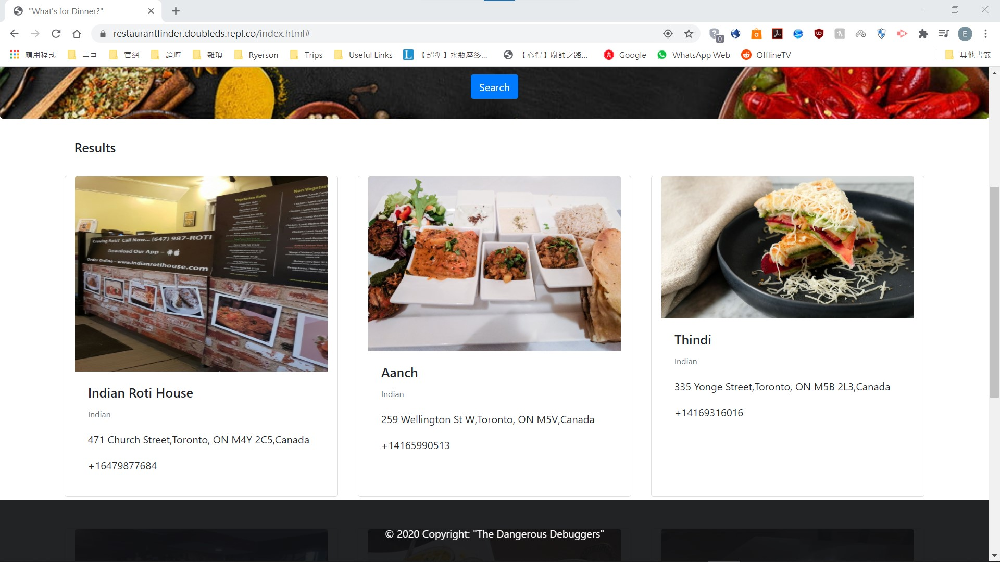
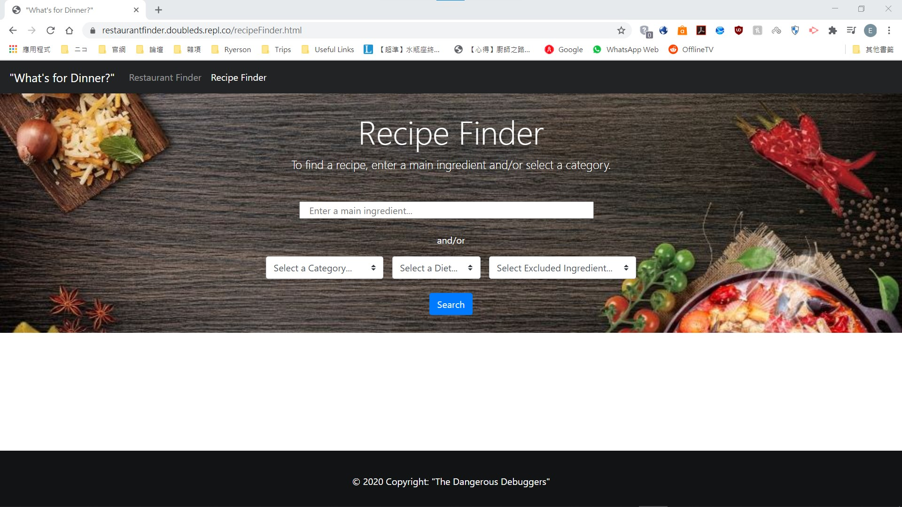
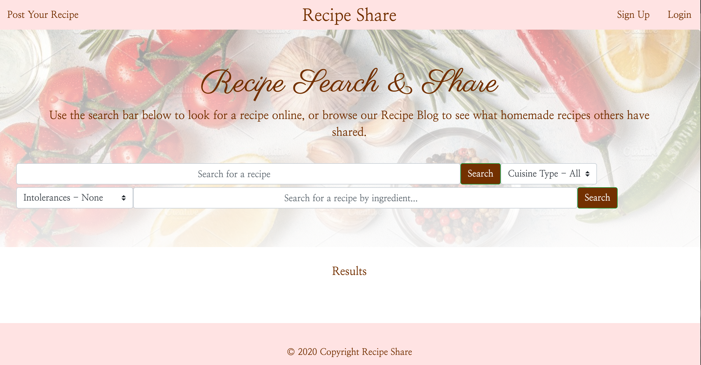

Project 1 - What's For Dinner?
Purpose: To combine restaurant finding and recipe finding into one web application
Usage:
- Makes calls to server APIs: Yelp Fusion API and EDAMAM's Recipe Search API
- Checks for user inputs and set as API parameters
- Shows results based on user inputs
This project consists of the following files:
- index.html: Restaurant finder page and the landing page when it is first loaded
- recipeFinder.html: Recipe finder page
- script.js: Manage API calls to Yelp Fusion API and show results for index.html/Restaurant finder page
- script2.js: Manage API calls to EDAMAM's Recipe Search API and show results for recipeFinder.html
- style.css: General styling of index.html and recipeFinder.html
Made using HTML5, CSS, Javascript, jQuery, Bootstrap, Yelp Fusion API and EDAMAM's Recipe Search API
Link to deployed application: https://marissarrwilson.github.io/Proj1/
Homepage - Restaurant Finder

Results Page

Recipe Finder Page

Password Generator
Usage: This password generator will provide the user with a password suggestion based on the criteria chosen by the user via a series of prompts.
Link to deployed application: https://marissarrwilson.github.io/PasswordGenerator/
Method
I made this password generator using HTML, CSS and JavaScript files. I did not make changes to the HTML and CSS files, and added code to the JavaScript file.
- I started by making arrays of the variables that would be used to generate the password: upper case letters, lower case letters, numbers and special characters.
- I then made an array of confirmation prompts for the above mentioned arrays/variables.
- Afterwards, I created a loop if the user entered a value outside of the paramaters with if/else functions.
Homepage

First Prompt
Result